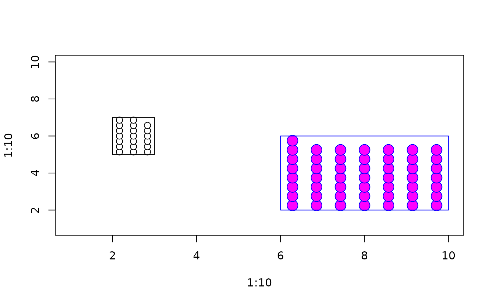

Draw a box filled with symbols
symbolbox.RdDraws a box on the current figure that is filled with symbols representing individual counts
Arguments
- x1
left side of box
- y1
bottom side of box
- x2
right side of box
- y2
top side of box
- tot
total number of symbols to put in the box
- relw
relative width (relative to height) of symbols
- fg
foreground color
- bg
background color
- box
(logical) draw box border?
- debug
debug output?
- ...
additional arguments to polygon() for drawing box
Examples
plot(1:10,1:10,type="n")
symbolbox(2,5,3,7,tot=20)
#> symbolbox: 2 5 3 7 20
#> symbolbox: 0.558299 0.9931413 3 7 3 7 20
symbolbox(6,2,10,6,tot=50,fg="blue",bg="magenta")

#> symbolbox: 6 2 10 6 50
#> symbolbox: 2.233196 1.986283 7 8 7 8 50